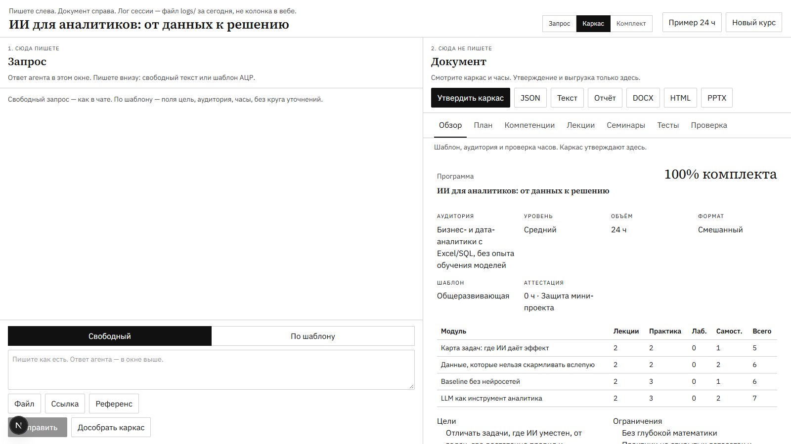

Пользователь
Методист Академии
Получает заявку, разбирает материалы, составляет учебный план, связывает темы с компетенциями и готовит задания.
not_idea для методиста академии
1 / 10
Продуктовый чекпоинт · 15 октября 2026
Помощник для сборки образовательных программ
Методист загружает запрос и материалы, получает каркас курса и проверяет его до сборки полного комплекта.
Сейчас программу приходится собирать и сверять вручную
Пользователь
Получает заявку, разбирает материалы, составляет учебный план, связывает темы с компетенциями и готовит задания.
Задача бизнеса
Убрать ручные подсчёты, раньше находить ошибки и тратить меньше времени на повторные согласования.
Берём правила из кейса и проверяем их в коде
Не настраиваем решение только под пример на 24 часа
Сначала проверяем каркас, потом собираем материалы

Это реальный интерфейс прототипа. На чекпоинте откроем готовый пример на 24 часа. Запрос к модели пока не показываем: доступ команда получит после чекпоинта.
Меньше ручной работы, но последнее слово остаётся за методистом
Для методиста
Часы и связи видны на одном экране. Можно поправить один раздел, не переделывая всю программу.
Для Академии
Одни и те же проверки работают для всех программ. Ошибки в часах и связях видны до согласования.
Эти показатели будем измерять на пилоте
Скорость
≤ 30 минОт получения запроса до утверждённого каркаса.
Корректность
≥ 95%Программ проходят проверку часов и связей с первого раза.
Качество
100%Результатов обучения связаны и с тестом, и с практическим заданием.
Что происходит между запросом методиста и готовой программой
Что покажем сейчас и что сделаем после получения доступа
Показываем только то, что уже можно проверить
Шаг 1
Показать общеразвивающую программу и баланс 24 из 24 академических часов.
Шаг 2
Открыть компетенции, учебный план, тест с ключом и семинар с критериями.
Шаг 3
Кнопка «Утвердить каркас» и архитектура следующего шага после получения доступа к модели.
Код проверяет каркас. Методист решает, можно ли идти дальше.